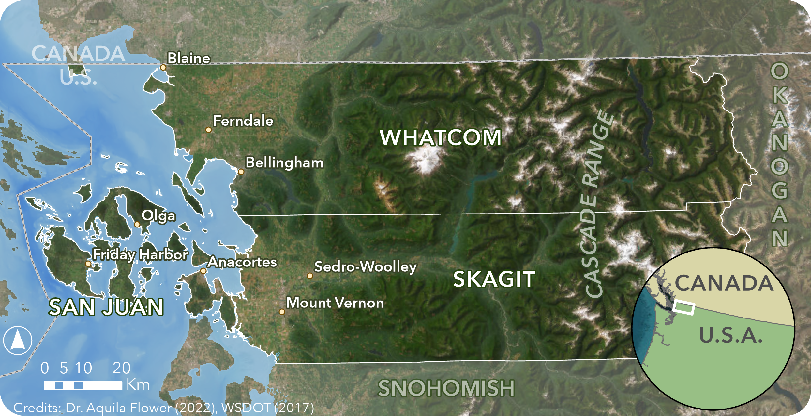

Northwest Washington:
San Juan, Skagit, and Whatcom Counties

Northwest Washington was the study area of my Master's Thesis, which focused on the climatic, historic, and social conditions that affect growing cereal grains in San Juan, Skagit, and Whatcom Counties.
See my thesis